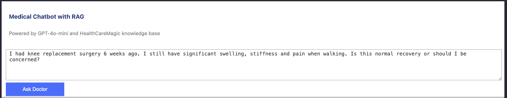
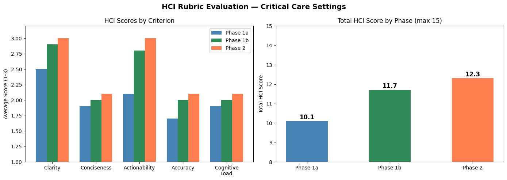
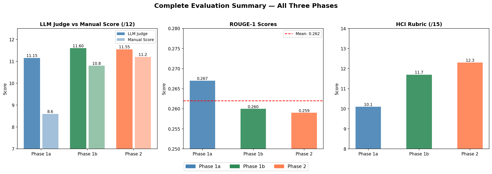
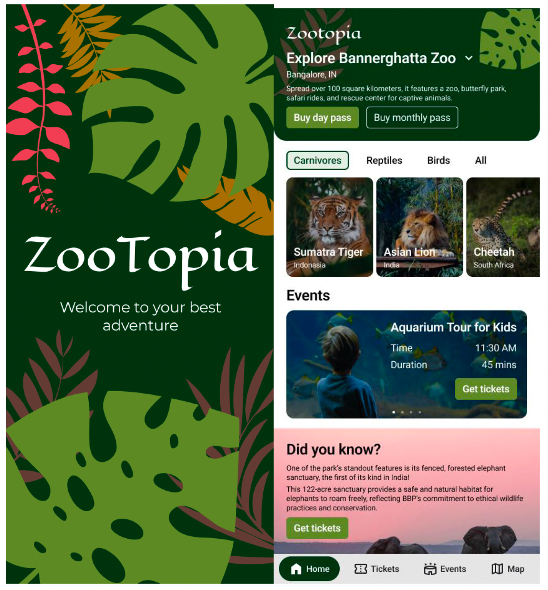
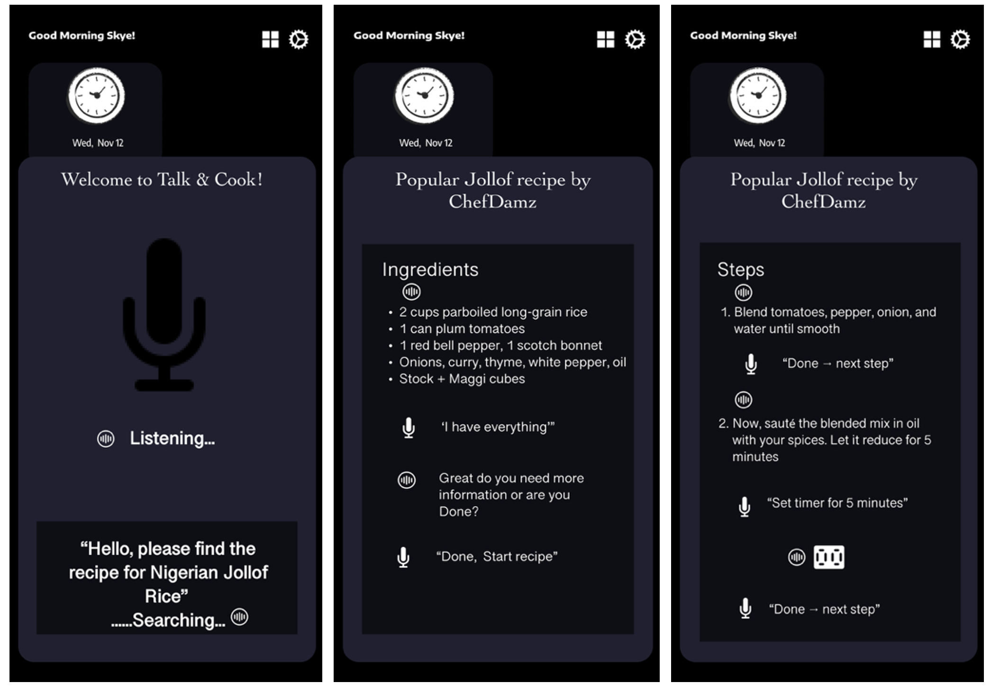
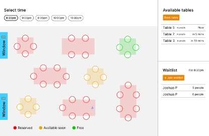

Understanding PPE use and alert design
Design explorations for just-in-time PPE compliance alerts in interdisciplinary medical settings.
Read the DIS 2025 paper ↗Christine Ikponmwonba, MPH
PhD Candidate & UX Researcher
Drexel University
UX research · Human-centered design · Healthcare
Human-centered research. Bringing a public health perspective to the design of interactive healthcare technologies.
My research explores how to design AI-based clinical tools that support healthcare workers in complex, busy settings like the ICU and ED. My current focus is designing PPE alerts that help clinicians stay safe while minimizing interruptions to patient care.
I’m exploring when and how PPE alerts should appear so clinicians can notice and respond to them without unnecessary interruptions.
Passed my candidacy exam.
Presented a poster at the 10th Annual Drexel Emerging Graduate Scholars (DEGS) Research Showcase ↗.
Peer reviewer for the ACM Conference on Human Factors in Computing Systems (CHI).
Mentored Drexel STAR Scholars on PPE alert design and interface redesign.
Advised by Dr. Aleksandra Sarcevic at Drexel University.
I’m a UX researcher and PhD candidate at Drexel University studying human–computer interaction and applied AI in healthcare. My work uses human-centered design to develop technologies that fit clinical workflows. In the Interactive Systems for Healthcare (IS4H) Research Lab, I study clinical workflows and collaborate with clinicians and engineers to inform the design and evaluation of healthcare technologies.
My research brings together interviews, workflow observation, co-design, prototyping, and usability evaluation. I use alert concepts and prototypes during interviews to explore clinicians’ needs and responses, translating qualitative findings into design requirements, alert concepts, interface prototypes, and evaluation criteria.
My background in epidemiology and public health includes experience as Projects Director at the American SIDS Institute, coordinating multidisciplinary teams across clinical trials, tissue donation research, and other projects focused on neonatal health, prematurity, and Sudden Unexpected Infant Death (SUID). This work shapes my understanding of healthcare workflows and informs my approach to designing technologies around people’s needs.
PhD Candidate
Research focus: Human-Centered Design, Human–Computer Interaction & Applied AI in Healthcare
Drexel University · In progress
MPH, Epidemiology & Biostatistics
University of Florida
MPH advisor: Cindy Prins, PhD ↗
BSc, Biochemistry
Calvin University
Transforming Tech Fellowship — Certificate of Achievement
Drexel University, College of Computing & Informatics · 2024–2025
About the initiative ↗
Certified in Public Health (CPH)
National Board of Public Health Examiners · February 2019
View credential ↗
Project Management Professional (PMP)®
Project Management Institute · November 2023
View credential ↗
Through interviews, co-design, prototyping, and usability evaluation, I explore how AI-based clinical tools can support PPE compliance while fitting clinical workflows. I use alert concepts and prototypes to explore clinicians’ preferences and inform alert behavior and interface design.
Design explorations for just-in-time PPE compliance alerts in interdisciplinary medical settings.
Read the DIS 2025 paper ↗Design and early evaluation of a video-based monitoring application for time-critical care.
Read the CHI 2026 extended abstract ↗Selected public health, machine learning, and data visualization projects.

Exploring how prompt engineering and retrieval-augmented generation affect medical chatbot responses, through technical and human-centered evaluation.
I built and evaluated three configurations to distinguish the effects of prompt engineering from retrieval. The project asks whether adding relevant doctor-response examples improves an LLM’s answers—and whether technical scores capture qualities that matter under time pressure.
Python · GPT-4o-mini · Sentence Transformers · FAISS · Gradio
Live demo currently offline.
A Python medical question-answering prototype using GPT-4o-mini, sentence-transformer embeddings, and FAISS retrieval over 50,000 doctor responses from the HealthCareMagic dataset.
Compared an original-prompt baseline, an improved prompt without retrieval, and an improved prompt with RAG on the same 20 questions. Evaluation combined LLM-as-judge scores, ROUGE, and a manual HCI rubric.
The improved prompt scored highest in the LLM-judge evaluation; RAG scored highest on the manual HCI rubric. Conciseness remained a weakness across configurations. Retrieval did not consistently outperform prompt engineering alone in this small comparison.


Across 20 questions, LLM-judge totals were 11.15/12 for the baseline, 11.60/12 for the improved prompt, and 11.55/12 for RAG. On the manual HCI rubric applied to 10 responses per configuration, totals were 10.1/15, 11.7/15, and 12.3/15 respectively.
These scores reflect this small project evaluation, not demonstrated clinical effectiveness. The different rankings show why a single automated score is insufficient for assessing interface and response quality.
Question → sentence-transformer embedding → FAISS search for three similar doctor responses → retrieved context plus question sent to GPT-4o-mini → response displayed in a Gradio chat interface.
Constrain response length, broaden evaluation, and test with clinicians before drawing conclusions about clinical suitability. A stable hosted demo remains to be configured.
Independent project. Small evaluation set, one non-clinical HCI evaluator, and no clinician testing or clinical validation.
Master’s project comparing completion of latent tuberculosis therapy among HIV-coinfected individuals and other high-risk groups.
View project on GitHub ↗Retrospective public health surveillance analysis and discussion of nursing home outbreaks.
View project on GitHub ↗Exploring cervical cancer risk classification using XGBoost.
View project on GitHub ↗Comparing logistic regression, decision tree, and random forest classifiers.
View project on GitHub ↗Automated machine learning classification using AWS AutoGluon.
View project on GitHub ↗A regression project using artificial neural networks.
View project on GitHub ↗Time-series forecasting of global COVID-19 cases using Meta Prophet.
View project on GitHub ↗Exploring immigration to Canada from 1980 to 2013.
View project on GitHub ↗A Python dashboard for annual airline performance data.
View project on GitHub ↗Housing-price data analysis with Python.
View project on GitHub ↗An analysis project focused on historical stock and revenue data.
View project on GitHub ↗A data science capstone notebook project.
View project on GitHub ↗
An app concept supporting zoo visits with exhibit information, maps, ticketing, and accessibility information.
View Figma design ↗
A voice-interface prototype for preparing Nigerian Jollof rice, with step-by-step guidance and hands-free commands.
View Figma design ↗
An interactive dining-table concept for ordering, requesting assistance, and payment.
View Figma design ↗Christine D. Ikponmwonba, Vidhi Shah, Sifan Yuan, Ivan Marsic, Randall Burd & Aleksandra Sarcevic
Aleksandra Sarcevic, Eleanor Wood, Katherine Ann Zellner, Christine D. Ikponmwonba, Mary Suhyun Kim, Ivan Marsic & Randall S. Burd
Intermittent hypoxia and caffeine in infants born preterm: the ICAF Randomized Clinical Trial ↗
Eric Eichenwald, Michael Corwin, Betty McEntire, Susan Knoblach, Catherine Limperopoulos, Kushal Kapse, Stephen Kerr, Timothy C. Heeren, Christine Ikponmwonba & Carl E. Hunt, for the ICAF Study Group
Adverse effects of COVID-19 pandemic on a multicenter randomized controlled trial ↗
Elie G. Abu Jawdeh, Carl E. Hunt, Eric Eichenwald, Michael J. Corwin, Betty McEntire, Timothy Heeren, Lisa M. Crowell, Christine Ikponmwonba, Ariana Saroufim, Stephen Kerr & the ICAF Study Group
SUID Tissue Consortium: Advancing Medical Research through Postmortem Tissue Donation ↗
C. Ikponmwonba & B. McEntire · American SIDS Institute
E. L. DeVos, C. Ikponmwonba, K. Patel, S. L. McKune, J. W. Grigg & A. Blue
S. L. McKune, C. Ikponmwonba & M. Alabduljabbar
Poster presentation · 10th Annual Drexel Emerging Graduate Scholars (DEGS) Research Showcase ↗
Adapting Hand Hygiene Monitoring Technologies to PPE Compliance: An Initial Exploratory Literature Review
SUID Tissue Consortium: Advancing Medical Research through Postmortem Tissue Donation
SUID Tissue Consortium: Introduction
Session Moderator — ISPID: International Conference on Stillbirth, SIDS, and Baby Survival
Sudden Unexpected Infant Deaths in Nigeria — Panel: SUID in Different Countries: Rates and Prevention Strategies
Global Health Case Competition at the University of Florida
CHI ’27: ACM Conference on Human Factors in Computing Systems.
CHI ’26: ACM Conference on Human Factors in Computing Systems.
Healthcare HCI research focused on clinical workflows and the design and evaluation of AI-based PPE alerts.
Mentor: Sarah McKune, PhD ↗
Supported council meetings and annual global health symposia; contributed to reports, posters, and abstracts; and represented the council through poster presentations at local and national conferences.
Related poster presentation
McKune, S. L., Ikponmwonba, C., & Alabduljabbar, M. How the interdisciplinary leads to the innovative in global health: learning from the Global Health Case Competition at the University of Florida ↗
Seventh Annual Consortium of Universities Global Health Conference · April 8, 2016 · San Francisco, CA
College of Public Health & Health Professions
I have mentored students across undergraduate, medical, and master’s programs on healthcare HCI research and design.
Research focus: Designing PPE alerts.
Research focus: Redesigning the PPE user interface.
Research focus: Qualitative analysis of PPE alert design interviews.
Research focus: Prototyping the PPE alert interface, with co-authorship of Bounding Boxes in Practice ↗.
Research Analytics & Operations
Related publications
2025 · Archives of Disease in Childhood — Fetal and Neonatal Edition
Intermittent hypoxia and caffeine in infants born preterm: the ICAF Randomized Clinical Trial ↗
2023 · Journal of Perinatology
Adverse effects of COVID-19 pandemic on a multicenter randomized controlled trial ↗
Questions about the SUID Tissue Consortium or access to tissue for research?
Medical examiner and donor-service partners, as well as researchers, can visit the American SIDS Institute website ↗ for contact information.